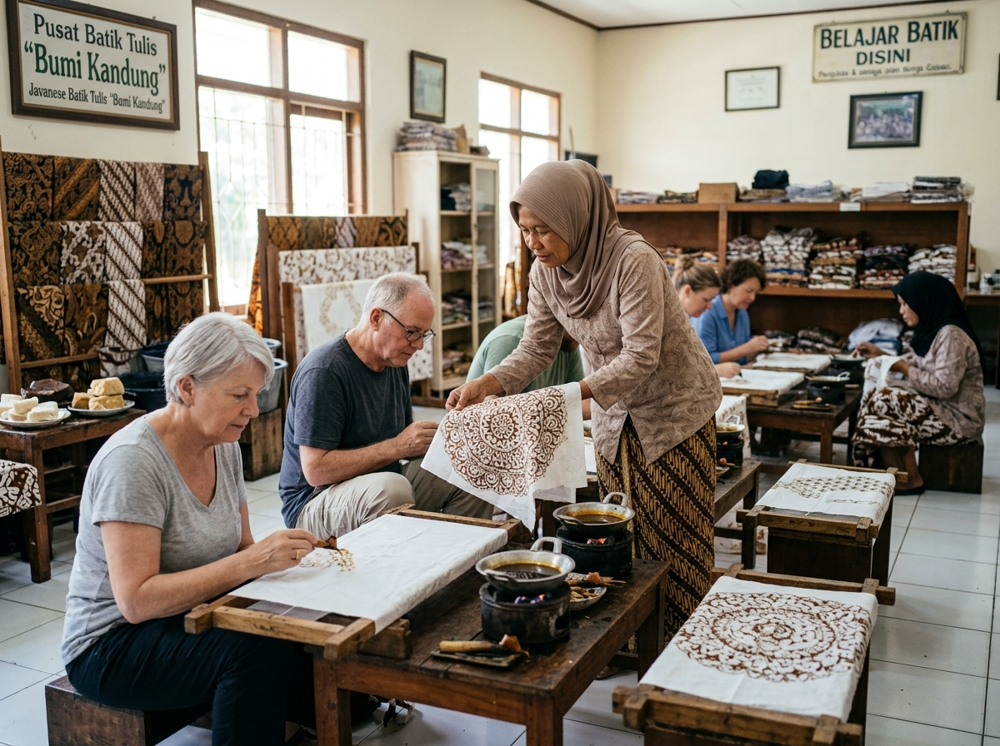
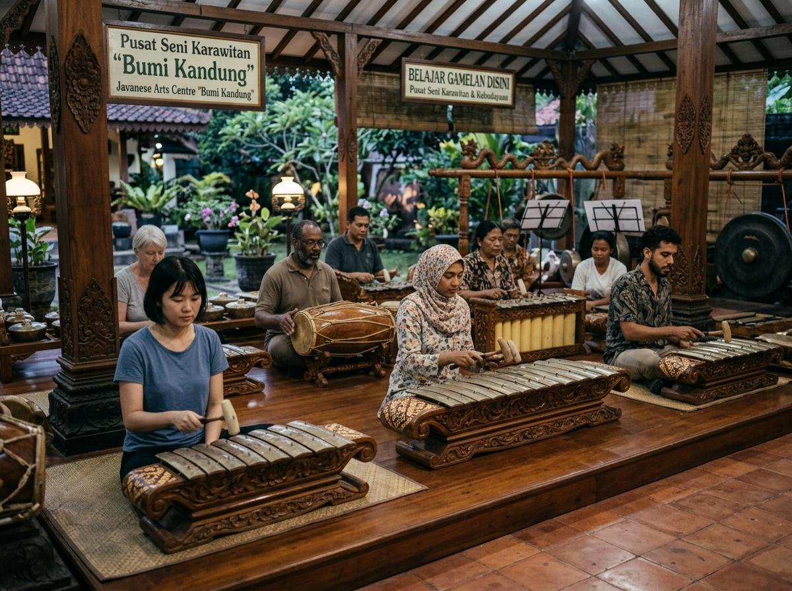
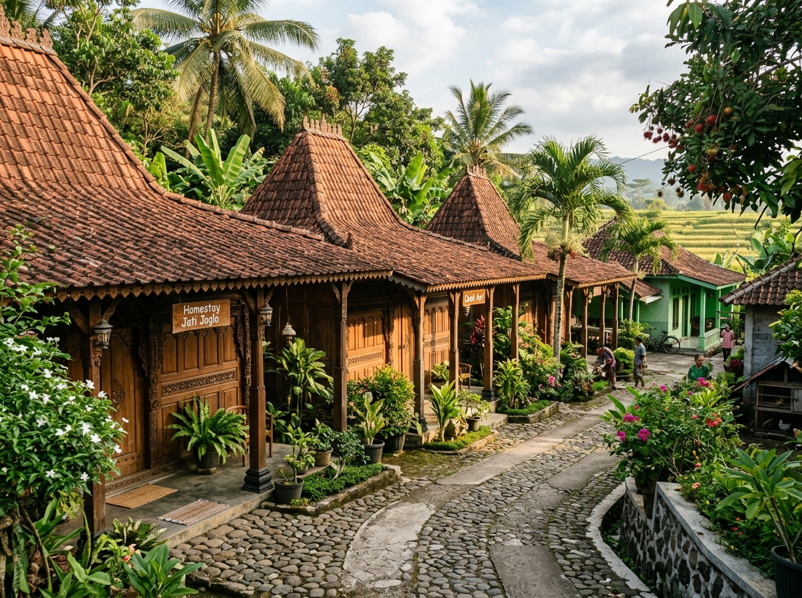
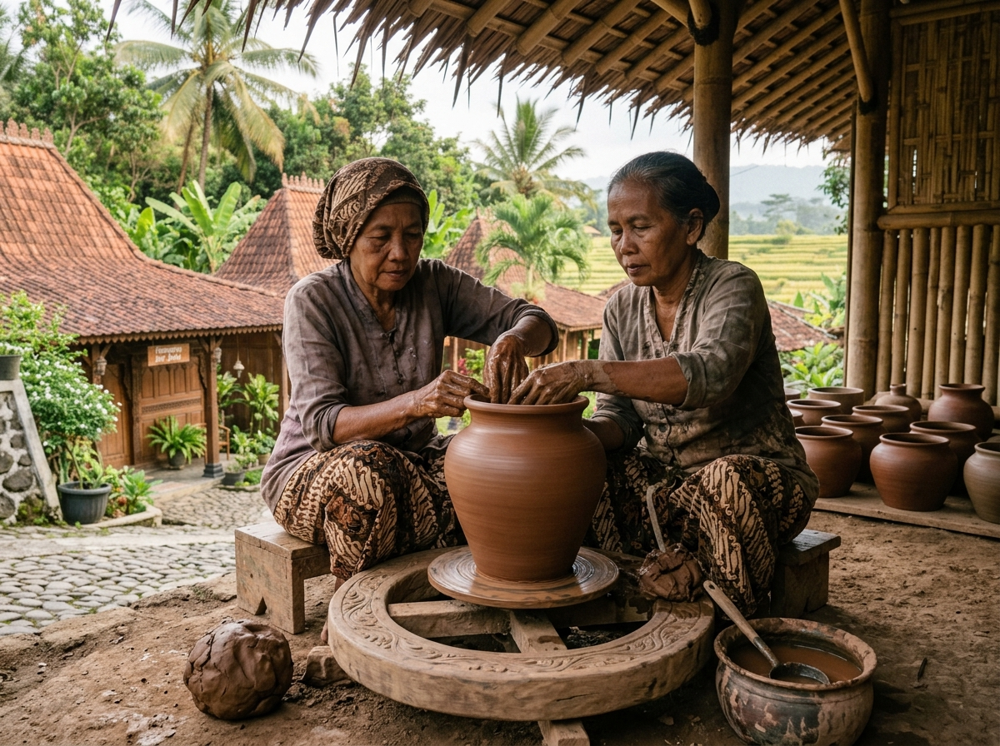
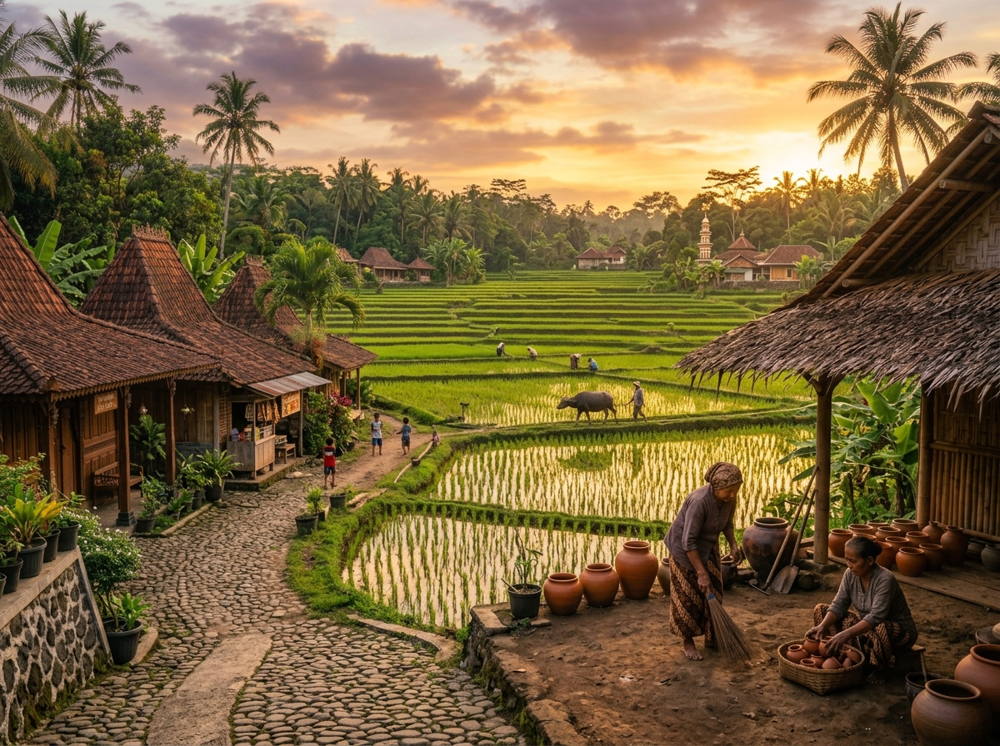
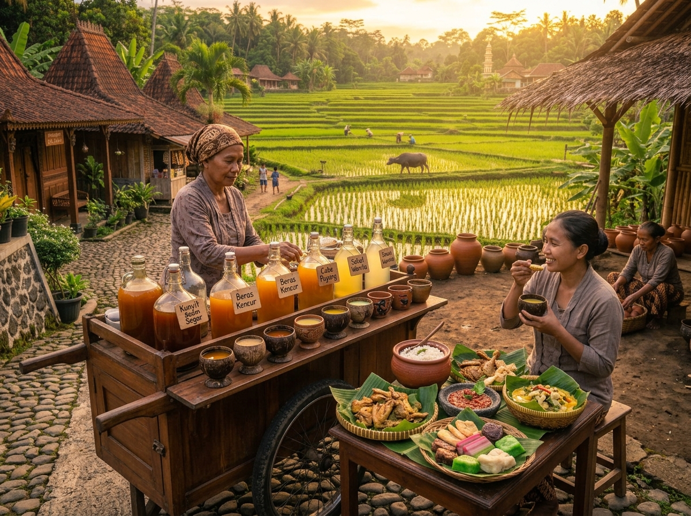

profil usaha
bumi kandung
"merawat tradisi, menembus batas waktu"
wisata budaya, edukasi kesenian, kerajinan tangan & kuliner tradisional
berdiri sejak 2019
deskripsi singkat
Berdiri sejak tahun 2019 di kaki Gunung Merbabu, Desa Wisata & Sanggar Seni "Bumi Kandung" lahir dari kerinduan untuk menjaga dan mendedikasikan kelestarian budaya Jawa Tengah. Terletak di kawasan perdesaan yang asri dan tenang, kami menghadirkan ruang edukasi interaktif tempat para pengunjung dapat berinteraksi langsung dengan para pengrajin lokal, seniman tradisional, dan warga desa yang senantiasa menjaga nilai-nilai kehangatan serta kearifan lokal secara otentik.
Di Bumi Kandung, setiap sudut desa dirancang untuk menyampaikan cerita leluhur. Mulai dari alunan merdu gamelan di Pendopo Sanggar Seni, keharuman racikan jamu tradisional di Dapur Mbok Jamu, hingga bentangan warna batik tulis buatan tangan—kami mengajak Anda tidak hanya datang sebagai penonton, melainkan melebur dan merasakan secara langsung ritme kehidupan perdesaan yang kaya akan warisan tradisi budaya.
fasilitas tempat
kami menyediakan beberapa fasilitas demi kenyamanan pengunjung, diantaranya :
linkrumah inap tradisional :
penginapan kayu dengan pemanas alami dan suasan pedesaan yang tenang.
pendopo sanggar seni :
gelanggang terbuka untuk latihan tari, karawitan (gamelan), dan pertunjukan wayang.
galeri & workshop kerajinan :
area belajar membatik kain tulis, membuat gerabah dari tanah liat, dan mengukir topeng kayu.
dapur tradisional :
tempat edukasi racikan jamu gendong resep leluhur dan pembuatan kue-kue basah tradisional.
amphitheater terbuka :
panggung alam berlatar persawahan untuk pentas seni malam minggu dan festival budaya harian.
area parkir & persewaan sepeda onthel :
area parkir luas untuk bus/mobil serta penyewaan sepeda tua untuk berkeliling desa.
galeri suasana desa
sekilas potret keindahan alam dan hangatnya aktivitas kebudayaan di bumi kandung :






cuplikan kehidupan bumi kandung
Saksikan keindahan lanskap alam, riuhnya ruang workshop kerajinan, dan kehangatan senyum warga lokal dalam video perkenalan singkat ini.